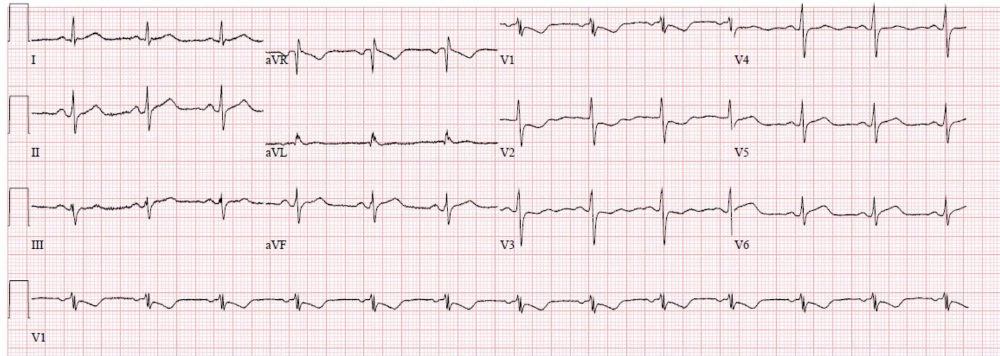
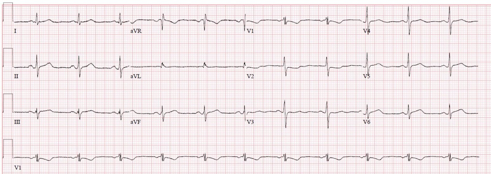
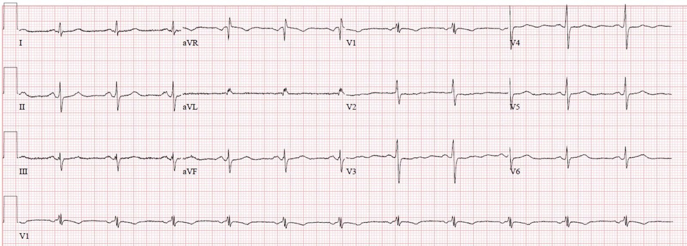
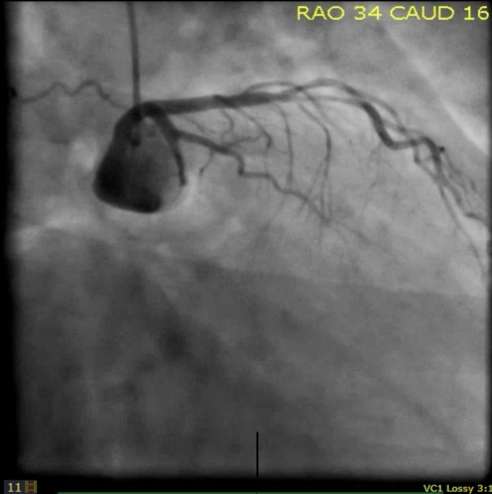
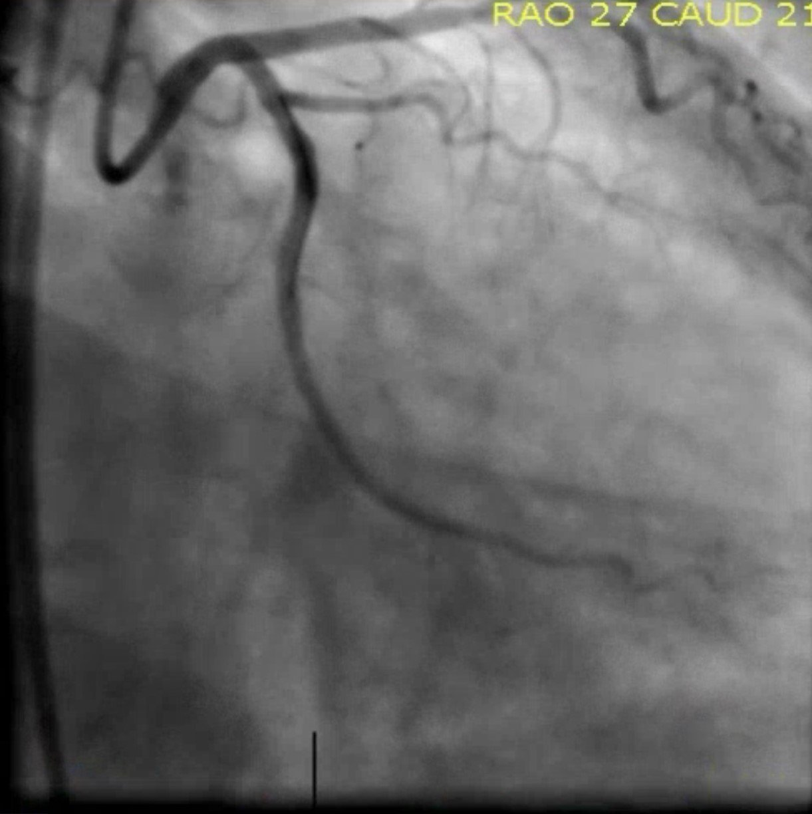
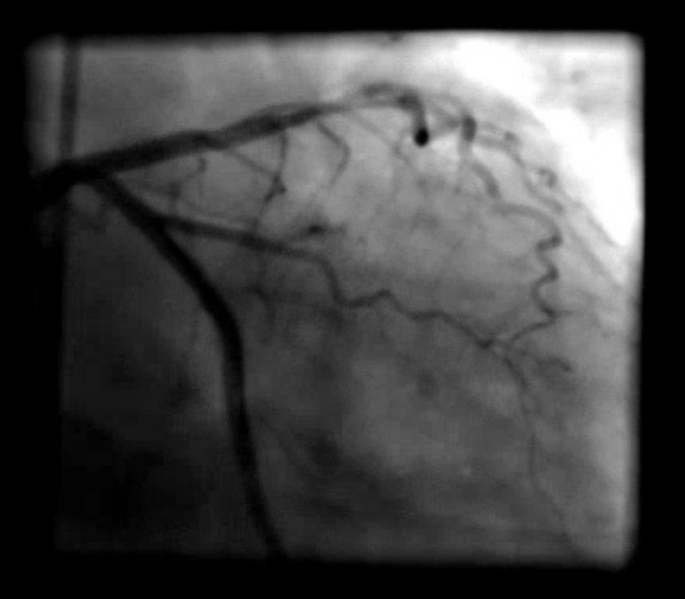
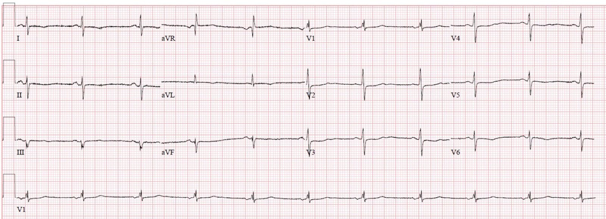
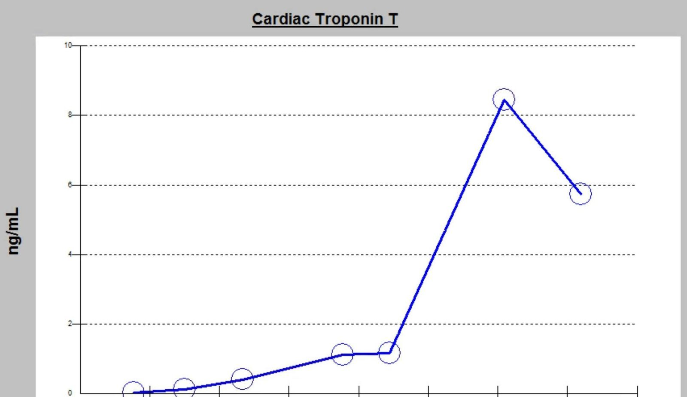
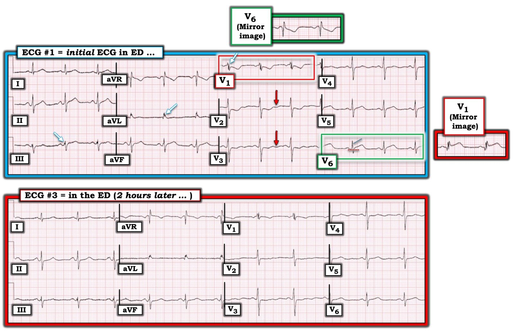

15/07/2019 — Một phụ nữ 60 mấy tuổi đột ngột có cảm giác đè nặng ngực
Bản dịch tiếng Việt của bài "A female in her 60s with sudden chest pressure" – Dr. Smith’s ECG Blog. Giữ nguyên toàn bộ 11 hình ảnh của bản gốc.
Tác giả: Pendell Meyers
Một phụ nữ giữa độ tuổi 60 có tiền sử SVT và tăng huyết áp (HTN) đến viện vì đột ngột xuất hiện cảm giác bó chặt ngực mức độ 3/10 khi đang nằm trên giường lúc sáng sớm. Bà bị buồn nôn và vã mồ hôi trong cơn này, kèm cảm giác bó chặt ở giữa hai xương bả vai, và đi ngoài một lần phân lỏng.
Đây là điện tâm đồ ban đầu của bà khi đến khoa cấp cứu (ED) tại mốc thời gian ban đầu (time zero) (không có điện tâm đồ cũ):


Nhịp xoang với ST chênh xuống dốc xuống đáng kể ở V1-V3, tối đa ở V1-V2. Cũng có ST chênh lên kín đáo ở V6 kèm sóng T có diện tích lớn và hình thái đoạn ST thẳng/lồi. Sóng T ở các chuyển đạo thành dưới có thể được coi là lớn nếu có điện tâm đồ cũ để so sánh.
Điện tâm đồ này có giá trị chẩn đoán nhồi máu cơ tim cấp thành sau và thành bên. Nguyên nhân thường gặp nhất của tình trạng này là nhồi máu cơ tim do tắc (OMI) ảnh hưởng đến các thành này, nhiều khả năng nhất là LCX hoặc một động mạch khác ở vùng chi phối này, bao gồm nhánh chéo hoặc nhánh bờ tù, hoặc RCA trong một số trường hợp.
Vì mô hình STEMI so với NSTEMI hiện nay làm suy giảm nghiêm trọng sự hiểu biết và khả năng nhận diện ST chênh xuống của OMI thành sau, nên dấu hiệu này ban đầu đã không được nhận ra.
Troponin ban đầu trả về tăng nhẹ ở mức 0.02 ng/mL. Kết quả này dẫn đến việc ghi lại điện tâm đồ tại t = 50 phút:


Các dấu hiệu nêu trên vẫn còn nhưng đã cải thiện nhẹ, tuy nhiên điện tâm đồ này vẫn cho thấy thiếu máu cục bộ đang diễn ra. OMI vẫn đang tiếp diễn cho đến khi được chứng minh ngược lại.
Không rõ bệnh nhân còn triệu chứng vào thời điểm này hay không.
Bệnh nhân được nhập khoa tim mạch với chẩn đoán NSTEMI. Đơn vị tim mạch không còn giường, nên bệnh nhân được lưu giữ chờ nhập viện (boarding) tại khoa cấp cứu.
Troponin lần thứ hai trả về 0.13 ng/mL, dẫn đến thêm một lần ghi lại điện tâm đồ tại t = 2 giờ:


CT động mạch chủ âm tính với bóc tách.
Bệnh nhân được bắt đầu dùng heparin.
Troponin lần 3 (Trop #3) tại t = 6 giờ 30 phút = 0.41 ng/mL
Troponin lần 4 (Trop #4) tại 9 giờ = 1.13 ng/mL
Troponin lần 5 (Trop #5) tại 12 giờ = 1.17 ng/mL
Cuối cùng, một ghi chú của nhóm tiếp nhận điều trị cho biết bà sẽ được đưa đi thông tim vì đau ngực kéo dài và troponin tăng dần tại t = 15 giờ.
Thông tim tại t = 16 giờ:
LCX đoạn giữa tắc 100% với dòng chảy TIMI 0. TIMI 3 sau PCI. Cũng ghi nhận bệnh ba nhánh mạch vành với RCA hẹp 70% và LAD đoạn giữa hẹp 90%.






Điện tâm đồ ngày hôm sau:




Những điểm cần học:
ST chênh xuống tối đa ở V1-V4 với phức bộ QRS bình thường (không giải thích được bằng RBBB, v.v.) là đáng lo ngại OMI thành sau cho đến khi được chứng minh ngược lại. Các chuyển đạo phía sau có thể hữu ích, nhưng việc không có ST chênh lên rõ ở các chuyển đạo phía sau không loại bỏ mối lo ngại OMI thành sau khi ST chênh xuống ở các chuyển đạo trước đã có giá trị chẩn đoán.
Thiếu máu cục bộ đang diễn ra (dựa trên triệu chứng, troponin hoặc điện tâm đồ) dù đã điều trị nội khoa là chỉ định thông tim cấp cứu.

===================================
Bình luận của KEN GRAUER, MD (15/7/2019):
===================================
Bàn luận ca bệnh TUYỆT VỜI của Dr. Meyers về một bản ghi mà tôi cảm thấy biểu hiện một số đặc điểm độc đáo và quan trọng. Bệnh nhân là một phụ nữ 60 mấy tuổi, đến viện vì khó chịu ở ngực mới khởi phát.
- Tôi tập trung vào việc diễn giải bản ghi tại khoa cấp cứu ban đầu (= điện tâm đồ #1 trong Hình 1). Tôi đã thêm điện tâm đồ #3 vào Hình 1 để tiện so sánh.


SUY NGHĨ CỦA TÔI về điện tâm đồ #1— Các dấu hiệu điện tâm đồ trên bản ghi ban đầu tại khoa cấp cứu này rất kín đáo và dễ bị bỏ sót. Tôi đã đánh dấu một số dấu hiệu chính.
Phân tích mô tả điện tâm đồ #1:
- Nhịp xoang tần số ~80/phút. Khoảng PR bình thường. Phức bộ QRS không rộng. Việc đánh giá khoảng QTc hơi khó vì các mũi tên MÀU ĐỎ ở chuyển đạo V2 và V3 (Xem bên dưới) — nhưng tôi tin rằng QTc bình thường. Trục mặt phẳng trán lệch trái — nhưng không đủ để xếp vào LAHB (blốc phân nhánh trái trước), vì QRS không âm ưu thế ở chuyển đạo II. Tôi ước tính trục khoảng -20 độ. Không có lớn các buồng tim.
Về Thay đổi Q–R–S–T:
- Ngoài chuyển đạo aVR, sóng Q duy nhất được thấy ở chuyển đạo aVL. Sóng Q ở aVL này có ý nghĩa chưa chắc chắn.
- Việc xác định vùng chuyển tiếp (nơi sóng R trở nên cao hơn độ sâu của sóng S) rất khó nhận ra trên điện tâm đồ #1 — vì phức bộ QRS ở hầu như tất cả các chuyển đạo ngực đều gần như đẳng điện!
Dấu hiệu đáng chú ý nhất trên điện tâm đồ #1 liên quan đến các Thay đổi sóng ST-T:
- Lúc đầu tôi không thấy nhiều thay đổi sóng ST-T ở các chuyển đạo chi.
- Dấu hiệu “bắt mắt” nhất là ST chênh xuống/sóng T đảo ngược ở chuyển đạo V1 (nằm trong hình chữ nhật MÀU ĐỎ trên điện tâm đồ #1). Các chuyển đạo V2 và V3 lân cận cho thấy sóng ST-T dẹt, với mức ST chênh xuống ít hơn. Sóng T ở V4 gần như dẹt, nhưng đoạn ST ở chuyển đạo này không chênh xuống.
- Dấu hiệu quan trọng nhất (và có lẽ là dễ bị bỏ sót nhất) — là ST chênh lên ở chuyển đạo V6 (nằm trong hình chữ nhật MÀU XANH LÁ trên điện tâm đồ #1). Đoạn khởi đầu ST ở chuyển đạo V6 thẳng đuỗn (song song với đường chéo MÀU XANH DƯƠNG) — và điểm J rõ ràng bắt đầu phía trên đường nền chấm chấm MÀU ĐỎ ở chuyển đạo này.
- Quay lại các chuyển đạo chi để xem lần thứ 2 — đoạn khởi đầu ST ở mỗi chuyển đạo thành dưới (so với sóng R) trông hơi thẳng đuỗn, và có thể đầy đặn ở đỉnh hơn mức lẽ ra phải có ở các chuyển đạo II và aVF. Như Dr. Meyers nhận xét — các sóng T thành dưới này có thể là sóng T tối cấp — nhưng nếu không có thêm các bản ghi khác của bệnh nhân này, tôi sẽ hoàn toàn không chắc liệu các chuyển đạo thành dưới có biểu hiện gì cấp tính hay không.
BÌNH LUẬN: Bệnh sử lâm sàng (một phụ nữ 60 mấy tuổi có khó chịu ở ngực mới xuất hiện) — rõ ràng đáng lo ngại một biến cố tim cấp. Tuy vậy, lúc đầu tôi không chắc chắn về OMI cấp qua lần xem thứ 1 điện tâm đồ #1. Suy nghĩ của tôi về bản ghi này như sau:
- NẾU không có ST chênh lên ở chuyển đạo V6 — thì dấu hiệu chính trên điện tâm đồ #1 sẽ là sóng ST-T chênh xuống ở các chuyển đạo trước (đồng thời cũng là chuyển đạo bên phải) V1,V2,V3. ST chênh xuống và/hoặc sóng T đảo ngược ở các chuyển đạo trước là một dấu hiệu điện tâm đồ luôn luôn cần khiến ta nghĩ tới “tăng gánh” thất phải, như gặp trong thuyên tắc phổi (PE) cấp (Để biết thêm về cách nhận diện trên điện tâm đồ PE cấp — Xin xem Bình luận của tôi ở cuối bài Blog của Dr. Smith ngày 5 tháng Tư năm 2019). Các dấu hiệu khác trên điện tâm đồ #1 có thể phù hợp với “tăng gánh” thất phải cấp là sự hiện diện của nhiều sóng S (ở các chuyển đạo I, II, III; và ở tất cả các chuyển đạo ngực) + hình ảnh có thể được hiểu là RBBB không hoàn toàn ở chuyển đạo V1 (với sóng S tận hẹp ở các chuyển đạo I và V6). Nhưng những điểm CHỐNG LẠI chẩn đoán PE cấp là: i) Bệnh sử, nghe giống bệnh tim, không có gợi ý khó thở cấp; và, ii) dấu hiệu điện tâm đồ bất thường là sóng ST-T chênh xuống rõ rệt nhất — vượt xa các chuyển đạo khác — ở chuyển đạo V1, và chỉ ở mức vừa phải ở các chuyển đạo V2 và V3. Thông thường, với “tăng gánh” thất phải cấp — các chuyển đạo V2, V3 và thường cả V4 cho thấy bất thường sóng ST-T rõ rệt hơn nhiều so với những gì thấy ở đây. Các thay đổi ST-T rõ rệt nhất thường không thấy ở V1.
- Theo ý kiến của tôi — hình dạng và mức độ tương đối của sóng ST-T chênh xuống ở các chuyển đạo trước cũng khác với những gì thường thấy khi có tổn thương thành sau cấp. Trong khi phần lớn nhồi máu cơ tim thành sau cấp đi kèm nhồi máu cơ tim thành dưới cấp (điều không thấy trên điện tâm đồ #1) — vẫn có thể gặp nhồi máu thành sau đơn độc với một số tổn thương LCx. Tuy vậy, trong hầu hết các trường hợp không có dấu hiệu điện tâm đồ bất thường kiểu sóng ST-T chênh xuống ở chuyển đạo V1 rõ rệt hơn nhiều so với ở các chuyển đạo V2 và V3. (Để biết thêm về chẩn đoán trên điện tâm đồ Nhồi máu cơ tim thành sau cấp — BẤM VÀO ĐÂY).
- Mặt khác — quan sát kỹ sóng ST-T ở chuyển đạo V6 (nằm trong hình chữ nhật MÀU XANH LÁ) cho thấy ST chênh lên trông có vẻ cấp tính rõ ràng ở chuyển đạo này. Thay vì nhồi máu cơ tim thành sau cấp — tôi tin rằng sóng ST-T chênh xuống có hình dạng bất thường mà chúng ta thấy ở chuyển đạo bên phải V1 của điện tâm đồ #1 phản ánh một thay đổi sóng ST-T soi gương hình–ảnh phản chiếu (mirror-image) so với hình dạng của đoạn ST chênh lên ở chuyển đạo bên trái V6 (Xem hình–ảnh phản chiếu của các chuyển đạo V1 và V6 trong Hình 1).
- Nhiều người hành nghề đã được dạy ghi “chuyển đạo phía sau” (tức là các chuyển đạo V7, V8 và đôi khi V9) khi cố gắng chẩn đoán nhồi máu cơ tim thành sau cấp. Theo kinh nghiệm của tôi — các chuyển đạo phía sau chưa bao giờ giúp được tôi, vì việc sử dụng “Nghiệm pháp Soi gương” (Mirror Test) (như tôi mô tả và minh họa TẠI ĐÂY) hầu như luôn giúp tôi nhận ra nhồi máu cơ tim thành sau cấp mà không cần dùng các chuyển đạo phía sau. Tuy vậy, điện tâm đồ #1 minh họa một trường hợp mà tôi dám chắc rằng các chuyển đạo V7 và V8 (nếu chúng được ghi) — hẳn đã giúp làm rõ thêm câu hỏi về ST chênh lên ở chuyển đạo V6.
- Phân mảnh phức bộ QRS được thấy ở một số chuyển đạo trên điện tâm đồ #1 (các mũi tên MÀU TRẮNG ở các chuyển đạo III, aVL và V1). Ý nghĩa của việc nhận ra phân mảnh phức bộ QRS — là nó gợi ý “sẹo”, thường cho thấy nhồi máu cũ và/hoặc bệnh cơ tim. Nhìn lại — sự phân mảnh này trên điện tâm đồ ban đầu đã là một manh mối cho thấy bệnh nhân có bệnh mạch vành nhiều nhánh nặng, như sau đó đã được xác nhận khi thông tim.
- Điện tâm đồ #1 cũng biểu hiện sóng U đảo ngược (các mũi tên MÀU ĐỎ ở các chuyển đạo V2 và V3). Đây không phải là dấu hiệu thường gặp. Ngay cả khi có — nó cũng khó nhận ra, và thường bị bỏ sót. Ý nghĩa lâm sàng của sóng U đảo ngược là nó là một dấu ấn của thiếu máu cục bộ nặng. Gợi ý về một sóng lệch U âm sau sóng T ít rõ hơn trên các điện tâm đồ ghi sau đó khi ca bệnh tiến triển, và không còn trên điện tâm đồ ngày hôm sau, sau tái tưới máu.
ĐIỀU CỐT LÕI: Ở người phụ nữ hơn 60 tuổi có khó chịu ở ngực mới xuất hiện này — ST chênh lên trông có vẻ cấp tính ở chuyển đạo V6 kèm các thay đổi sóng ST-T soi gương dạng hình–ảnh phản chiếu ở chuyển đạo V1 + các thay đổi thiếu máu cục bộ khác ở các chuyển đạo V2 và V3 — lẽ ra đã đủ để xứng đáng được thông tim cấp.
- Việc biết rằng troponin xét nghiệm liên tiếp đang tăng + đau ngực kéo dài càng ủng hộ thêm nhu cầu thông tim cấp.
Như tôi đã nhấn mạnh trong bài Dr. Smith ECG Blog trước (đăng ngày 11 tháng Bảy năm 2019) — Một trong những cách tốt nhất để nhận ra rõ hơn các thay đổi cấp tính kín đáo trên điện tâm đồ ban đầu — là so sánh với một điện tâm đồ ghi sau đó. Điều này hẳn sẽ thấy rõ khi so sánh điện tâm đồ ban đầu trong ca này ( = điện tâm đồ #1 trong Hình 1) — với điện tâm đồ #3 ghi 2 giờ sau đó.
- Lưu ý trên điện tâm đồ #3 — ST chênh lên ở chuyển đạo V6 nay đã mất. Đoạn ST ở chuyển đạo này cũng không còn thẳng như trên điện tâm đồ #1.
- Các thay đổi sóng ST-T ở chuyển đạo V1 trên điện tâm đồ #3 trông không còn cấp tính như trên điện tâm đồ #1. Các thay đổi sóng ST-T ở các chuyển đạo V2 và V3 cũng ít rõ rệt hơn.
- Cuối cùng — Hãy so sánh hình dạng sóng T ở các chuyển đạo thành dưới giữa 2 bản ghi trong Hình 1. Việc sóng T ở mỗi chuyển đạo thành dưới của điện tâm đồ #3 dẹt hơn ủng hộ nghi ngờ của chúng tôi rằng các thay đổi sóng T tối cấp sớm đã thực sự hiện diện ở các chuyển đạo thành dưới của điện tâm đồ #1.
- Tổng hợp lại tất cả — các điện tâm đồ liên tiếp trong ca này cho thấy thay đổi sóng ST-T động (dynamic) — mà ở một bệnh nhân đang đau ngực kéo dài là chỉ định thông tim kịp thời.
Chúng tôi xin CẢM ƠN Dr. Meyers đã trình bày ca bệnh này!